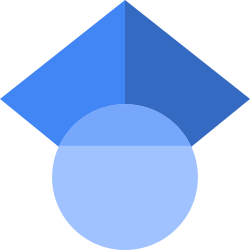
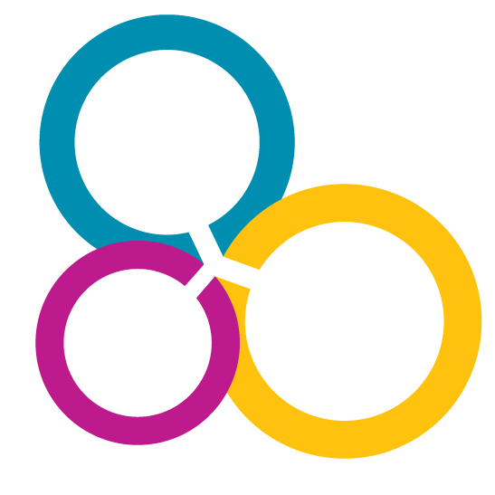

Afonso Arriaga
Computer Security & Cryptography
Research Associate, SNS group, SnT, University of Luxembourg
PGP: 851045F862395AC9154E48D7120FAB86F424D95B
Email me
Hi 👋, I am currently a researcher at the SnT, University of Luxembourg. My research focuses on cryptography, particularly the design, provable security, and implementation of real-world cryptographic protocols. In the past, I managed the PKI for Luxembourg ID cards, passports, residence permits and digital covid certificates, and worked on ICAO standards for electronic travel documents. More recently, much of my work has focused on Password-Authenticated Key Exchange (PAKE) protocols, the transition of PAKE to post-quantum security and their use in the security mechanisms of electronic passports. I have authored several PAKE protocols, including SweetPAKE (ASIACCS’24), CHIC (ASIACRYPT’24), and Tempo (TCHES’26/3).

Google Scholar |
Euraxess interview 2022Research Interests
- Real-world cryptographic protocols and implementations
- Formal security analysis
- Post-quantum cryptography
- Password-authenticated key exchange (PAKE)
- Security mechanisms of electronic passports
Publications 📄
-
(Preprint) NoIC: PAKE from KEM without Ideal Ciphers
Afonso Arriaga, Manuel Barbosa, Stanislaw Jarecki
PDF -
(Accepted) Tempo: An ML-KEM to PAKE Compiler Resilient to Timing Attacks
Afonso Arriaga, Manuel Barbosa, Stanislaw Jarecki
To appear in TCHES 2026/3
PDF | GitHub -
(Accepted) HIC is all you need: Practical Post-Quantum Password-Authenticated Public Key Encryption
Afonso Arriaga, David Mestel, Jan Oupicky, Peter Browne Ronne, Marjan Skrobot
To appear in the Springer LNCS proceedings of CT-RSAC 2026
PDF -
(Accepted) End-to-End Verifiable Elections with Casting of Publicly Audited, Cleartext Ballots
Peter Y A Ryan, Peter B Roenne, Afonso Arriaga, Olivier Pereira
To appear in the GI LNI proceedings of E-Vote-ID 2025
PDF -
C’est très CHIC: A compact password-authenticated key exchange from lattice-based KEM
Afonso Arriaga, Manuel Barbosa, Stanislaw Jarecki, Marjan Skrobot
Advances in Cryptology - ASIACRYPT 2024
PDF | DOI | YouTube| Slides -
SweetPAKE: Key exchange with decoy passwords
Afonso Arriaga, Peter Y A Ryan, Marjan Skrobot
ACM Asia Conference on Computer and Communications Security - ASIACCS 2024
PDF | DOI | Slides -
Wireless-Channel Key Exchange
Afonso Arriaga, Petra Sala, Marjan Skrobot
Topics in Cryptology - CT-RSA 2023
PDF | DOI -
Novel Collaborative Filtering Recommender Friendly to Privacy Protection
Jun Wang, Qiang Tang, Afonso Arriaga, Peter Y A Ryan
International Joint Conference on Artificial Intelligence - IJCAI 2019
PDF | DOI -
Facilitating privacy-preserving recommendation-as-a-service with machine learning (poster)
Jun Wang, Afonso Arriaga, Qiang Tang, Peter Y A Ryan
ACM Conference on Computer and Communications Security - CCS 2018
PDF | DOI) -
Private Functional Encryption: Indistinguishability-Based Definitions and Constructions from Obfuscation
Afonso Arriaga, Manuel Barbosa, Pooya Farshim
Progress in Cryptology - INDOCRYPT 2016
PDF | DOI -
Updatable Functional Encryption
Afonso Arriaga, Vincenzo Iovino, Qiang Tang
Paradigms in Cryptology: Malicious and Exploratory Cryptology - MYCRYPT 2016
PDF | DOI -
Trapdoor Privacy in Asymmetric Searchable Encryption Schemes
Afonso Arriaga, Qiang Tang, Peter Y A Ryan
Progress in Cryptology - AFRICACRYPT 2014
PDF | DOI -
On the Joint Security of Signature and Encryption Schemes under Randomness Reuse: Efficiency and Security Amplification
Afonso Arriaga, Manuel Barbosa, Pooya Farshim
Applied Cryptography and Network Security - ACNS 2012
PDF | DOI
PhD thesis
- Private Functional Encryption – Hiding What Cannot Be Learned Through Function Evaluation
University of Luxembourg, 2017
PDF
Academic service 🎓
Event organization
- Luxembourg Science Festival 2025 - Public science outreach
Workshop instructor - PAKE 2025 - Workshop on Password Authenticated Key Exchange (PAKE) and Password Security & Usability
Event organizer - ETAPS 2024 - European joint conferences on theory and practice of software
Local Proceedings Chair
Program committee member
External reviewer
- ACNS, CHES, CSF, EuroCrypt, ESORICS (x4), IEEE Transactions on Computers journal, IFIPSEC, ProvSec
Funded projects
- FuturePass: Transition of low-entropy authentication ciphersuites into a post-quantum world
Marjan Skrobot (PI and author), Afonso Arriaga (author)
FNR CORE Junior, grant no. C21/IS/16236053/FuturePass, budget 780k EUR
From 2022 to 2025 - RAPID: Practical searchable encryption design through computation delegation
Afonso Arriaga
FNR AFR, PhD grant no. 5107187
From 2013 to 2017
Teaching 👨🏫
I teach mainly courses in computer security, cryptography, and functional programming. I created the course Software Foundations, an introduction to functional programming in Haskell, which later became a mandatory course in the Bachelor in Computer Science (BiCS) at the University of Luxembourg under the name Programming Fundamentals 3.
-
Course coordinator and lecturer
- 2025/2026: Programming Fundamentals 3 (University of Luxembourg) 👈
- 2024/2025: Programming Fundamentals 3 (University of Luxembourg)
- 2023/2024: Programming Fundamentals 3 (University of Luxembourg)
- 2022/2023: Software Foundations (University of Luxembourg)
-
Lecturer (selected lectures)
- 2024/2025: Security 2, Principles of Security Engineering, Security Modeling (University of Luxembourg)
- 2023/2024: Bachelor Semester Project, Security 2, Principles of Security Engineering, Security Modeling (University of Luxembourg)
- 2022/2023: Security 2, Principles of Security Engineering (University of Luxembourg)
- 2012/2013: Laboratórios de Informática 1 (University of Minho)
- 2011/2012: Laboratórios de Informática 1 (University of Minho)